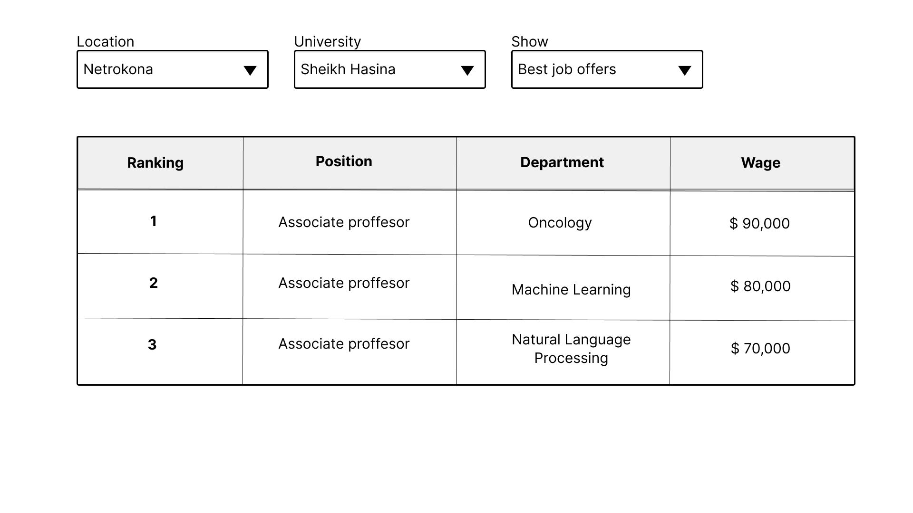

First Idea
We have introduced a full-stack Python web application, utilizing Streamlit for the front end and RDFlib for ontology handling.
Through our ontology, we have the capability to generate queries that establish connections between universities.
Requirements First Prototype
- R1: Create an Ontology of the concept University that can relate to universities with their assigned global ranking
- R2: Convert the csv data to the ontology creating a KG
- R3: Exploit the KG with SparQL queries that:
- R3.1:Allows users to search for the top ranked universities on a specific location
- R3.2:Allows users to search for the career paths that yield the highest empleability on a specific university
- R5: Deploy a user-friendly web service to the users can see the exploited information
Prototypes
